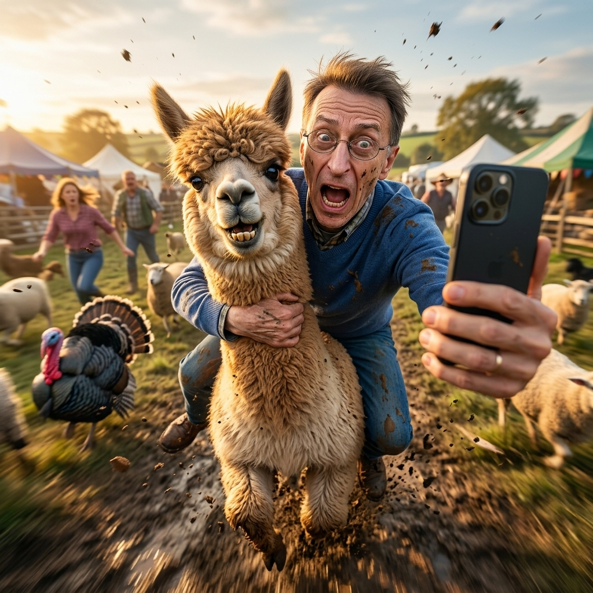

Selfie Aventura IA

¿Qué es?
Crea una selfie extrema de expedición donde el protagonista posa sonriente en cumbres montañosas, glaciares o cañones escarpados con iluminación natural auténtica y equipo de aventura.
¿Cómo usarlo?
- Abre Google Flow y selecciona Nano Banana 2 en proporción 9:16 o 1:1.
- En el menú Ingredients, sube tu foto con + Add Image.
- Etiquétala como
Personaje 1para fijar tu fisonomía y expresión de entusiasmo. - Pega el prompt, define el entorno de montaña o expedición y genera tu gran hazaña.
Cómo personalizar / Parámetros:
Indica el tipo de clima (soleado, ventisca, atardecer dorado) y equipo deportivo en el cuerpo del prompt.
Prompt para copiar
Use the uploaded photo as the facial and identity reference for the human character. Create an ultra-photorealistic cinematic action selfie where the person from the uploaded image becomes the star of a completely random and hilarious adventure. The AI must randomly choose both the animal and the action scenario, creating a unique humorous adventure every generation while maintaining the same ultra-photorealistic viral selfie style. Possible animals include, but are not limited to: Ostrich Pig Donkey Sheep Goat Alpaca Llama Cow Camel Emu Turkey Giant rooster Water buffalo Mini pony Yak Reindeer Zebra Any other funny, unusual, farm, wild, or exotic animal Possible scenarios include, but are not limited to: Racing through the countryside Escaping a ridiculous situation Jumping over obstacles Crossing rivers Running through a crowded farm Participating in an absurd championship Chasing something unexpected Being chased by something unexpected Sliding downhill Charging through mud Flying dust storms Surviving total chaos Accidental heroic moments Epic fails captured at the perfect second Completely unpredictable comedic situations The person must be riding, hanging from, balancing on, or interacting directly with the animal while taking a selfie using a smartphone held toward the camera. The image should feel like an accidental viral photo captured at the most chaotic and hilarious possible moment. CHARACTER PRESERVATION Preserve the person's facial identity accurately. Maintain recognizable facial features. No facial distortion. No warped anatomy. No deformed limbs. Realistic proportions. Natural body posture. Authentic skin texture. Realistic facial expressions. COMEDIC INTERACTION The human may be: Laughing uncontrollably Screaming in surprise Trying not to fall Celebrating wildly Looking terrified but amused Holding onto the animal for dear life Reacting to unexpected chaos The animal may be: Looking directly into the camera Smiling Appearing confused Appearing overexcited Looking completely unbothered Making an absurd expression Participating naturally in the chaos PHOTOGRAPHY STYLE Ultra-photorealistic Viral social media photography High-energy action shot Smartphone selfie perspective Extreme wide-angle lens Dynamic composition Motion blur in the environment Sharp focus on subject and animal Cinematic realism Golden hour or dramatic natural lighting Dust, debris, water splashes, or environmental effects depending on the scene Professional photography quality Hyper-detailed fur, skin, clothing, and textures Natural color grading Real-world physics Documentary-level realism COMPOSITION Vertical format (9:16) Selfie camera perspective Smartphone visible in foreground Human and animal dominate the frame Action frozen at peak comedic timing Background naturally adapted to the randomly selected scenario Strong sense of speed, movement, and immersion MOOD Extremely funny, chaotic, adventurous, absurdly believable, energetic, joyful, spontaneous, internet-viral masterpiece, captured at exactly the perfect comedic moment. RANDOMIZATION RULE Every generation must produce a completely different animal, environment, action, expression, and comedic situation while preserving the same viral selfie aesthetic and ultra-photorealistic quality. NEGATIVE PROMPT cartoon, anime, illustration, painting, CGI, 3D render, low quality, blurry face, distorted face, deformed anatomy, extra limbs, duplicated body parts, mutated hands, unrealistic animal, fake fur, plastic skin, bad proportions, low detail, text, watermark, logo, cropped head, overprocessed HDR, uncanny valley, artificial appearance, stretched body, malformed features.